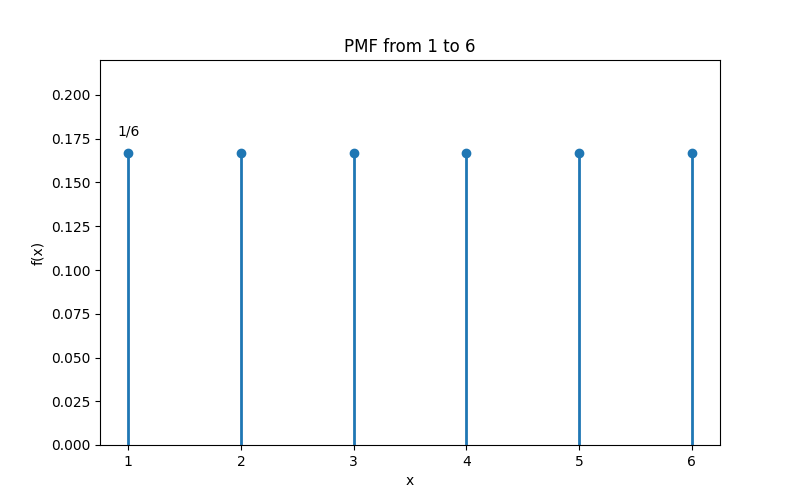
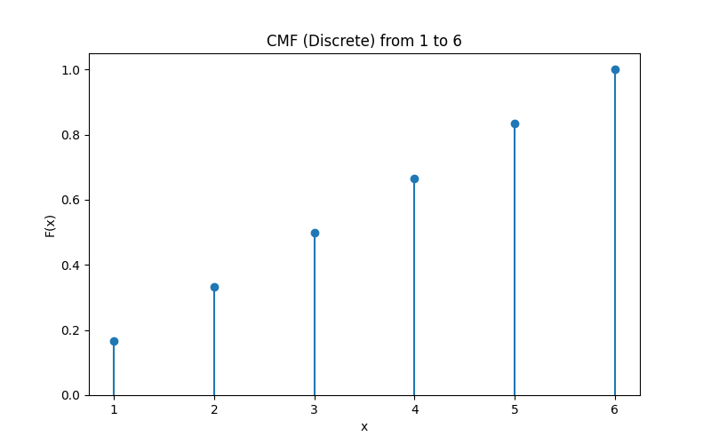
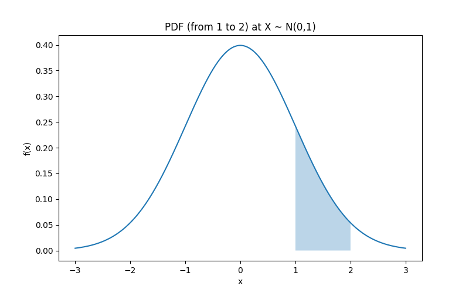
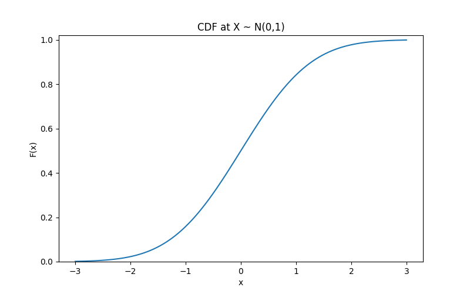

확률, 통계의 기본 개념부터 베이즈 정리, 그리고 생성 모델의 개념까지 논리적 흐름에 따라 정리한 문서
1. 통계적 추론
확률론과 통계학의 출발점: 알고자 하는 전체 집단을 정하고, 이를 어떤 확률 모형으로 설명할지 결정.
모집단, 모수, 그리고 생성 모델
모집단 (Population)
정보를 얻고자 하는 전체 대상의 집합. → 보통 알 수 없음
ex) 주사위를 무한히 던졌을 때 나오는 모든 결과
모수 (Parameter)
모집단의 확률 분포 형태를 결정하는 값. → 보통 알 수 없음
생성 모델 (Generative Model)
모수가 주어졌을 때 데이터가 어떤 확률 법칙에 따라 생성되는지 설명하는 틀.
- 1. 모수가 정해지면 모집단의 확률 분포가 완전히 결정
- 2. 분포를 알면 모집단과 동일한 확률 법칙을 따르는 데이터 무한 생성 가능
- 3. 따라서 생성 모델은 자연의 모집단 확률 분포를 잘 근사하도록 분포의 모수를 학습
현실에서는 전체 데이터를 다 알 수 없기 때문에 일부 표본을 이용하여 전체의 성질을 추축하고 설명하는 모델을 만든다.
2. 확률
표본 공간과 확률
표본 공간 (Sample Space)
무작위 실험에서 나올 수 있는 모든 가능한 결과의 집합.
표기 : $\Omega$
확률 (Probability, $P$)
특정 사건이 일어날 가능성을 수치로 표현한 값.
표기 : $P(A)$
표본 공간 $\Omega = \{1, 2, 3, 4, 5, 6\}$
짝수가 나올 사건 $A = \{2, 4, 6\}$
확률 $P(A) = \frac{3}{6} = \frac{1}{2}$
조건부 확률과 베이즈 정리
조건부 확률 (Conditional Probability)
어떤 사건 $B$가 일어났다는 조건 하에, 다른 사건 $A$가 일어날 확률
베이지안 정리 (Bayes' Theorem)
확률 $P(A \mid B)$를 알고 있을 때 $P(B \mid A)$를 계산하기 위함.
likelihood $P(A \mid B)$ : 사건 B가 발생했을 때 사건 A가 발생할 확률
evidence $P(A)$ : 사건 A가 발생할 확률
posterior Probability $P(B \mid A)$ : 사건 A가 발생했을 때 사건 B가 발생할 확률
사건 $A$ = "4 이상": $A = \{4,5,6\}$
사건 $B$ = "짝수": $B = \{2,4,6\}$
3. 확률 변수와 확률분포
확률 변수
확률 변수 (Random Variable)
표본 공간의 각 결과에 실수 값을 대응시키는 함수.
확률적 결과를 계산 가능한 형태로 바꾸는 역할.
표기 : $X : \Omega \rightarrow \mathbb{R}$
확률 분포(Probability Distribution)
모수로 결정되는 확률 규칙.
확률 변수가 어떤 값을 가질지에 대한 확률 규칙.
가능한 값과 그 값이 나타날 확률을 연결하는 구조.
표기 : $P_X(B) = P(X \in B)$
확률 변수 $X = \{1, 2, 3, 4, 5, 6\}$ 중 하나의 값
확률 분포 $P(X=x) = \frac{1}{6}$
이산 확률 변수와 이산 확률 분포
확률 변수 : 이산적인 값
$$X \in \{x_1, x_2, x_3, \cdots\}$$
확률 분포 : 확률 질량 함수(PMF)
$$p_X(x)=P(X=x) → \sum_x p_X(x)=1$$
확률 : 확률 질량 함수의 y 값
$$P(a \le X \le b) = \sum_{x=a}^{b} p_X(x)$$
PMF (Probability Mass Function)
이산 확률 변수의 분포(확률)를 나타내는 함수 $p_X(x)$
$P(X=x_i) = p_X(x_i), \qquad (i=1,2,\dots,n)$
CMF (Cumulative Mass Function)
이산형 분포의 주어진 확률 변수가 특정 값보다 작거나 같은 확률을 나타내는 함수 $F_X(x)$
$F_X(x) = P(X \le x)$
주사위 예시에서 PMF 그래프는 각 눈 $1,2,\dots,6$에 대해 같은 확률이 점 형태로 배정된 모습을 보여준다. 반면 CMF 그래프는 각 눈 이하가 나올 확률을 누적해서 계단처럼 증가하는 형태를 보여준다.


연속 확률 변수 (Continuous)
연속 확률 변수는 $X \in \mathbb{R}$처럼 연속적인 값을 갖는다. 이 경우 한 점에 확률을 붙이는 대신, 밀도 함수를 통해 구간 확률을 해석한다.
전체 구간에서의 넓이는 1이어야 한다.
PDF와 CDF
연속형에서 PDF 값 자체는 확률이 아니다. 확률은 구간 적분값으로 계산되며, 특정 값 이하의 누적 확률은 CDF로 나타낸다.


연속 확률 분포에서 $f_X(x)$의 값 자체는 확률이 아님. 확률 계산 기준은 구간의 넓이, 즉 적분값.
4. 기댓값 정리
기댓값의 정의
기댓값: 확률 분포를 하나의 숫자로 요약할 때 가장 먼저 보는 대표값. 각 값에 해당 확률을 가중치로 곱해 평균을 내는 개념.
연속형과 성질
연속형 확률변수에서는 합 대신 적분으로 기댓값 계산. 또한 독립성과 무관하게 선형성이 유지된다는 점이 핵심.
기댓값은 변수들이 서로 독립이 아니어도 선형성 성립. 복잡한 문제를 단순화할 때 매우 자주 사용.
5. 우도
확률과 우도의 차이
확률: 모수가 정해졌을 때 데이터가 나올 가능성 설명. 우도: 데이터가 고정되었을 때 어떤 모수가 더 그럴듯한지 비교.
왜 중요한가
같은 데이터를 두고 여러 모수를 비교할 때, 그 데이터를 가장 잘 설명하는 모수를 찾는 기준이 바로 우도.
- 모수 추정: 최대우도추정(MLE)의 기본 기준.
- 모형 비교: 어떤 가정이 데이터를 더 잘 설명하는지 판단.
- 통계 추론: 회귀, 분류, 베이지안 추론과 자연스럽게 연결.